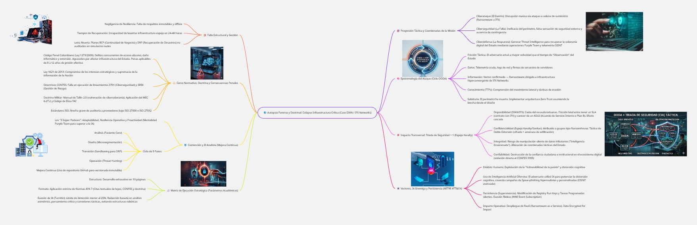

Disrupción sistémica de la infraestructura crítica colombiana mediante un ataque a la cadena de suministro.
"La supremacía de la información no se garantiza firmando contratos con proveedores, sino asumiendo el control táctico de nuestra propia infraestructura."
Operación: Disrupción Masiva a IFX Networks
Objetivo: Generación de *Threat Intelligence* para APTs
Vector Principal: Ransomware a Cadena de Suministro
Documentación y artefactos forenses de la operación.
Aplicación del derecho internacional a la ciberguerra en el caso de estudio.
Análisis forense detallado del incidente sistémico y doctrinal.

El adversario operó con asimetría brutal. Estábamos estancados en "Observación", ellos ya "Actuaban".
Recolección de IoCs, firmas de ransomware y telemetría colapsada.
Confirmación del vector: Compromiso de infraestructura del proveedor.
Mapeo de TTPs (Movimiento lateral y doble extorsión).
Implementación de **Zero Trust** para la contención.
| Táctica | Técnica Ejecutada | Mitigación Doctrinaria |
|---|---|---|
| Acceso Inicial | Spear-phishing / VMware ESXi | MFA estricto y segmentación |
| Persistencia | Registry Run Keys / Tareas Programadas | Monitoreo de integridad |
| Evasión | Ejecución *fileless* (WMI) | Threat Hunting proactivo (Blue Team) |
| Impacto | Cifrado (Doble Extorsión) | Backups *Offline* / Inmutables |
El factor humano es el vector, pero el analista capacitado es la contramedida.
La DIAN carecía de autonomía para recuperar operaciones sin su proveedor. Falla en el **ADLS (Acuerdo Interno)** vs. un SLA blindado en papel.
Incumplimiento de la Ley 1621 (Seguridad e Inteligencia), los CONPES de resiliencia digital y el **Manual de Tallin 2.0** de cibersoberanía.
Desplegar los "3 Súper Poderes": **Adaptabilidad**, Resiliencia y **Proactividad** para una mejora continua inmutable.